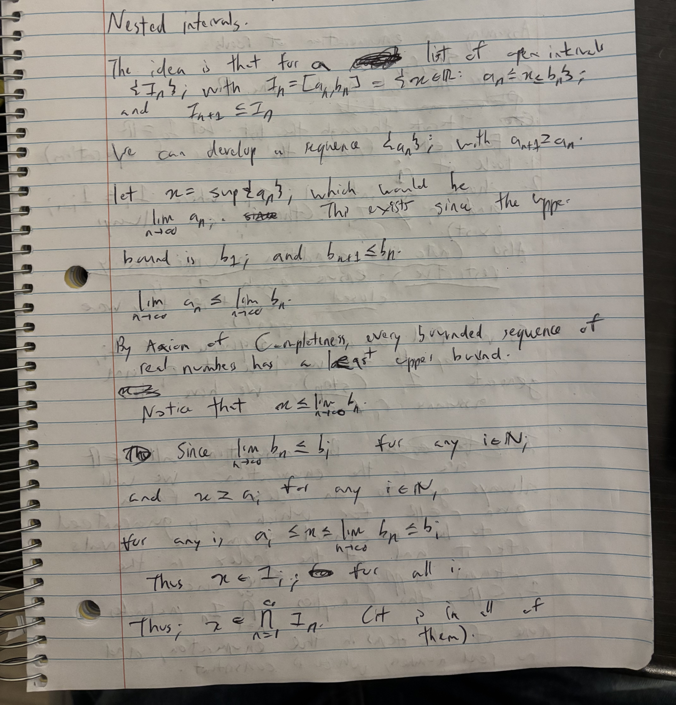

Link to other articles
Real numbers are countable
(Incomplete, just proof of work)
First, what is consdered an uncountable set?
One is the set of all the infinite binary strings. Or infinite decision pathways from the root. The real numbers are necessarily of the same cardinality as the set of infinite binary strings. For reasons that will become clear, instead of the binary strings consisting of 0's and 1's as the base mathematical objects, let it consist of 2's and 3's.
You can visualize this as a power set from the root. Label the root with a special marker, B. It is only one object so it does not affect the countability result. This is the first "level". From here, the next level is generated by splitting each object at the current level in half. So each object generates a 2, 3 pair as different edges/paths. Keep doing this to infinity. Now from the root, if you follow a particular path of generation (choose either 2 or 3 at each level, and follow to infinity), you get one of the aforementioned infinite binary strings. The set of all these paths is the aforementioned uncountable set.
I will now show that you can map this to a subset of the natural numbers. From the root, label each edge as 2 or 3. From there, exponentiate by 2 or 3 as a simple identity operator - if we chose to follow 2, exponentiate by 2. If we chose to follow 3, exponentiate by 3. This is your natural number map to the current point in the path. The next exponentiation by 2 or 3 applies to this number. Then repeat to infinity.
We can show uniqueness guarantees among each path. Note the immediate implication from the root. The choice of either 2 or 3 already creates a dichotomy of even/odd. Any exponentiation pathway from there will preserve this dichotomy. This is why I chose exponentiation rather than multiplication, the exponentiation immediately guarantees this uniqueness.
Inductively, from there, you have different numbers across the board. From every point, you produce two different numbers. Meaning that as you go down, all the numbers on the level are guaranteed to be different.
Collect this entire group of results. You get a set of natural numbers. Notice this generation is equivalent to the power set formulation, which generates the infinite binary strings. And this is just a mere subset of the natural numbers.
Recall the real numbers have the same cardinality as the set of infinite binary strings. Thus the natural numbers have the same cardinality as the real numbers.
So where is the confusion? For a century it has been assumed that these real numbers are uncountable. Indeed the real numbers do have a different property than the natural/rational numbers, especially as to how they are generated. I believe this is due to faulty proofs, and certain jumpps in the definitions of the real numbers systems and problems in defining and generating irrational numbers. For now I shall stick to laying out one such proof, and explaining why it does not rigorously hold.
I will post images of my work, due to mathematical notation.



On top of this, I will show that the diagonalization argument, which purportedly proves the uncountability of the real numbers, does not hold.
The diagonalization argument also uses the set of infinite binary strings as a base for an "uncountable cardinality" which cannot be enumerated. The argument states that if we have such an enumeration, generate a new binary string s as follows: at index i of the enumeration, choose the ith index of the binary string, flip the digit, and add this as the next digit of s. At every i we have the assurance that the string s cannot be that digit or any of the ones before. Thus as we progress to infinity, whatever we generated is not any of the strings in the enumeration. The conclusion leaped to by the argument is that the string s is an infinite binary string as we follow to infinity, yet is not part of the enumeration of all infinite binary strings, therefore the contradiction allegedly lies in the fact that the set of infinite binary strings is enumerable. I would argue against this conclusion. The inductive guarantee that s cannot be the string i or any before that only holds for finite values of i. It no longer holds once we get into the threshold of infinity. In other words we cannot say that this string is not any of the strings after index i. In order to generate this string s, one would literally have to cross the field of all infinite binary strings. One could in fact perform an alternate proof here and suggest that since s is an infinite binary string, it is in the set of infinite binary strings. Another way of viewing this is that at index i, we can be assured that there is an infinite binary string with s as the start, in fact there are infinitely many such strings, and any completion of s must be one of them - after all, this is the set of all infinite binary strings. We literally assumed this as fact.
Notice that this argument is essentialyl equivalent. Enumerate the set of all rational numbers between 0 and 1, non-inclusive. So rational numbers within (0, 1). We will attempt to show that there is a rational number between 0 and 1 that is not there. Here's how. Let the rational number be q. And start q as 1/2. For each index i in the enumeration, multiply q by that rational number. So we have the guarantee that q is not the rational number at index i or any before that, but it is a rational number. Do this to infinity and voila - we have allegedly proven our statement that the rational numbers are uncountable. The argument is absurd since the number turns out to be 0. Which is not even a rational number. On top of it if we simply extend the field to include 0 we have no contradiction. The reason the absurdity is easy to see here but not for the set of infinite binary strings is that it is easier to recall for the rational numbers that there is the idea of separation between "finitude of operations" and "infinitude of operations" looming over the rational numbers. We have forgotten to think about this for other kinds of objects. Indeed, in the past, before axiom of completeness and explorations into real numbers, one would simply say, "you can never get there, or generate this number, it would take infinitely long". This is the exact case for the s in the diagonalization argument. You can never even generate this s. To do so you would have to go beyond the size of the set in question, you would have to "complete the set". If you are completing the set, and you allegedly have the guarantee that the resultant object is not any number in the set, whatever object you retrieve is not in the set, plain and simple - it is both out of bounds and none of them. So you have allegedly "seen" all the infinite binary strings, and the object is none of them. Thus this s is not even an infinite binary string, in the same way that 0 is not a rational number in (0, 1). Indeed, there already exists a notion of "bound" in the diagonalization argument - there is a beginning, the first such string in the enumeration, and there is an endpoint (after all one performs the "run to infinity" operation here). This "bound" implies a separation of object and draws the analogy even closer to that of the rational numbers. 0 here is considered the separate "next step" past the boundary of the class of objects. 0 is not a "rational number in (0, 1)" which avoids the contradiction in this case. Given the symmetry one could also say s is not an "infinite binary string" since it pushes past the bound of infinite binary strings, even though the intermediate steps in the generation of s are indeed binary strings (one can just pad the end with 0's to make the intermediate steps infinite binary strings).
Things get even more contradictory - proofs like this go against the very concept of infinity. The whole point of infinity is one cannot get to the end. There is ALWAYS another. So to say that "we do this for ALL objects in this infinite set" is already paradoxical, because one can say, "but there's still another!" So already, we have generated very many possibilities for contradiction, beyond the fact that the set of infinite binary strings was enumerated, including the very nature of infinity itself. One therefore cannot claim that the set of infinite binary strings are uncountable by this proof, as there are many more jarring open contradictions here.
(to be continued)
(I have found many more profound and sophisticated ways to explore this - both to prove that the real numbers are mappable to the natural numbers, and that the previous "proofs" otherwise have some flaw. I have already consolidated these, will upload them eventually)